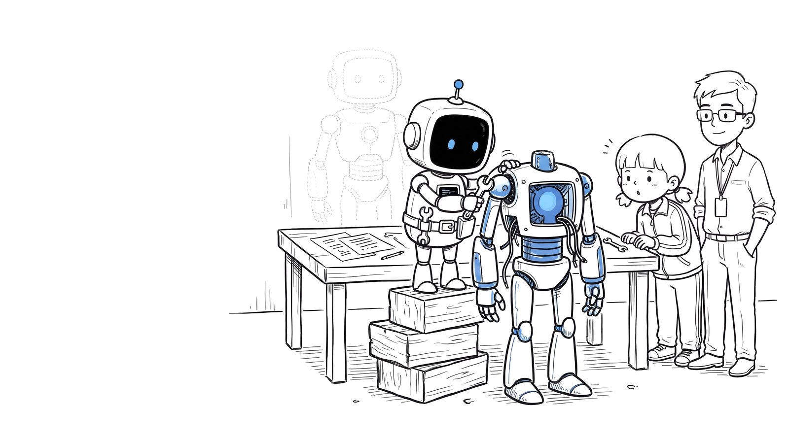
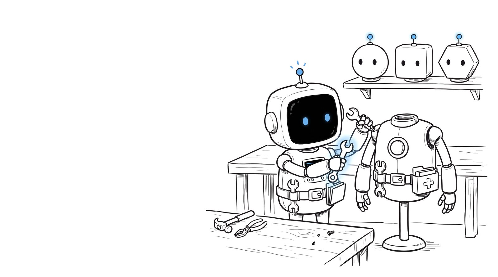

给初中生的科学连环画
AI 能自己造 AI 吗？
跟着一篇 2026 年 11 月的论文 Singularity-Bench，看 11 个 AI 智能体参加一场“造 AI”的考试。第一册讲整场考试，后三册各拆开一关细讲。

第一册
AI 能自己造 AI 吗？
六关考题、怎么防作弊、成绩，以及第一名的五个习惯。
22 格 · 5 张图表

第二册
推理这一关
一台“出餐机器”怎么造、钱怎么算，为什么 11 台里有 6 台得零分。
22 格 · 6 张图表

第三册
集群调度这一关
16 张显卡要同时伺候 28 个模型：谁常驻、谁轮班，分数为什么是两个数相乘。
20 格 · 3 张图表

第四册
造一副手脚
让 AI 从零写智能体框架，换三个大脑做五道题；第一名只多修好了一个错误。
18 格 · 5 张图表
原文：Yang Zhou、Krish Agarwal、Zhuoming Chen 等，Singularity-Bench: Can Agents Build Agents?，arXiv:2611.16591。arxiv.org/html/2611.16591v1
文字和数字按论文原文写；画面是 AI 生成的示意画，不是论文里的图；小禾和阿宁是虚构人物。